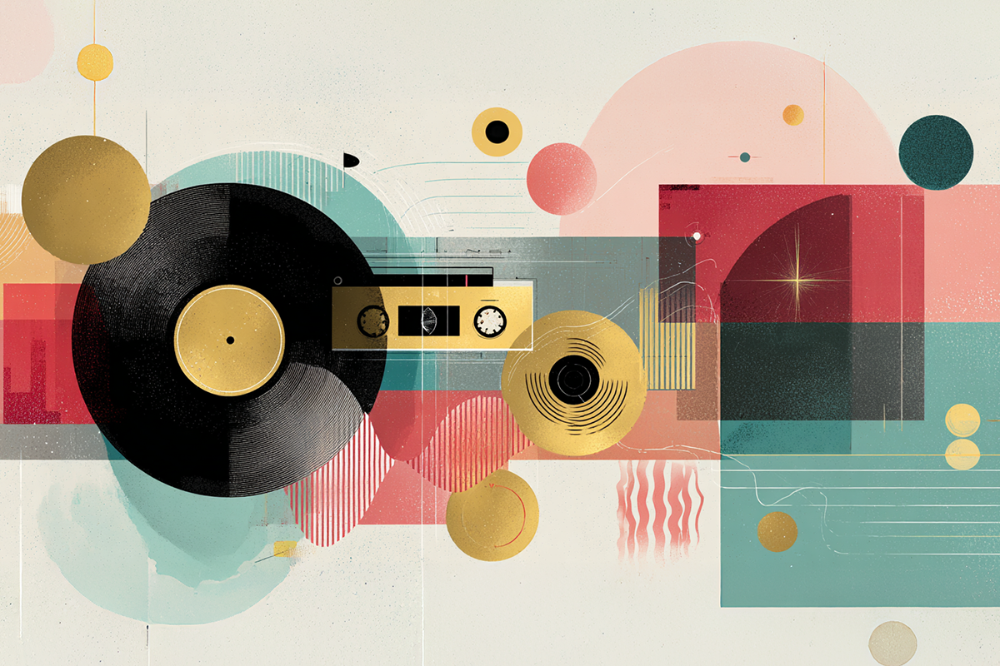
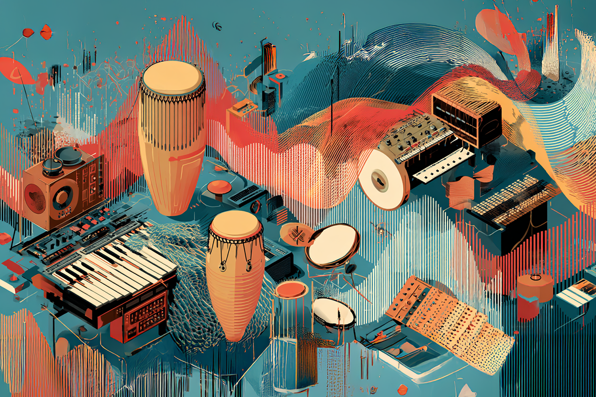
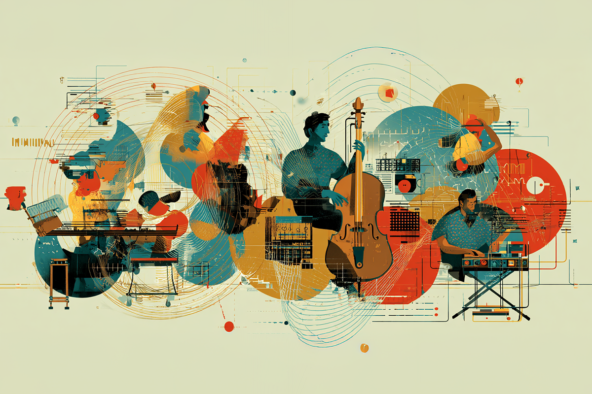
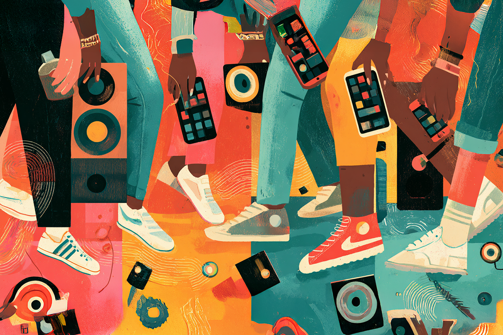

¿Qué tendencias musicales podríamos esperar este 2026?
Nostalgia, cruces culturales y nuevos sonidos digitales podrían ser los protagonistas del año
Nostalgia, cruces culturales y nuevos sonidos digitales podrían ser los protagonistas del año

Está bien, llevamos poquito de este año, pero los días pasan volando y, no quiero ser esa persona, pero no nos vamos a dar cuenta cuando ya estemos en el límite de la mitad del 2026. Siempre pasa, y esta vez no será la excepción.
Porque la vida pasa rápido, es que vale la pena arriesgarse con predicciones de lo que podría suceder en la escena musical. Ya me entienden, lanzarse con algunas ideas, intenciones y motivos que tendrán los próximos grandes hits que sacudirán este nuevo año.
Por eso me estoy dando la licencia de dar algunas ideas con respecto a las tendencias musicales que podrían tomarse el 2026. Repasar algunos puntos por encima, otros con argumentos que se han ido desenvolviendo con el tiempo. ¿Veamos?

Pareciera que, más que una tendencia, es una figura estética que nos va a seguir por el resto de la vida. El mainstream se agarró del sonido retro y no lo soltó más, ya sea con el disco, el city pop o, desde lo latino, volviendo a las raíces del folclor o a los boleros, pareciera que cada curva de antaño revive en las canciones actuales.
La última gran tendencia es la del Y2K, un revival a lo que fue el sonido pop de los 2000. Este estilo comenzó a gestarse hace unos cinco años y sigue pegando fuerte tanto en sonido como en estética.
Es que, más que un copy-paste, parece que estamos siendo testigos de una constante reinvención sonora, pero con el indiscutible sello vintage.
Es una movida inteligente, y por eso es que se sigue perpetuando. Lo retro llega como un sonido nuevo a las generaciones contemporáneas y, claramente, es una fórmula que se recicla de vez en cuando: como las modas, nos enfrentamos a una predilección cíclica. Por esto mismo, la tendencia a repetir patrones exitosos del pasado sobre una base actualizada, parece ser la movida a seguir. Es esto último lo que nos lleva al siguiente punto.

Quizás sería estupendo explicar a qué me refiero cuando menciono las hibridaciones sonoras. Este concepto se puede entender cuando culturas o tradiciones musicales se mezclan para crear un nuevo sonido, combinando elementos locales y globales dentro de una misma canción. ¿Se entiende? Quizás lo podemos ejemplificar mejor.
Pongamos, por ejemplo, a Rosalía. La cantante está en la cima de la popularidad a nivel global, y esto se entiende por su variada propuesta musical, donde liga varios géneros musicales, mezclando lo autóctono de su país, como el flamenco, con estilos tan variados como el reggaetón, el pop, el R&B y los ritmos urbanos en general. Estas hibridaciones sonoras son las que le dan la impronta al sonido de Rosalía, permitiendo experimentar y llegar a los más variados oyentes. Son justamente estos los que se sienten aludidos al escuchar géneros musicales que ya reconocen, pero con un giro distinto, que es el sonido tan característico de la española.
Así, con muchos artistas.
Esto de las hibridaciones también se da en otros contextos, como en el K-pop. Este gigante industrial se basa en combinar diferentes estilos. El sonido del K-pop, desde su génesis, tiene mucho de pop europeo, estadounidense y japonés, pero son ellos quienes también se apropian de otros sonidos para terminar creando el pop coreano extremadamente popular como lo conocemos ahora.
Este pop se adapta a lo que llama la atención, no solo desde una perspectiva local, sino a una mercantil de características globales; es por eso que se volvió imperativo experimentar con diferentes géneros, los que pueden pasar desde el rock, el R&B e incluso el reggaetón.

Esto ya lo conversamos antes; sin embargo, no podríamos dejarlo de lado. Con la importancia de las redes sociales, y conociendo sus características tan ligadas a lo inmediato, es que las nuevas canciones que busquen devorar esta industria musical tan competitiva y veloz deberán tener una duración mínima.
No es lo ideal, pero es lo esperable dentro de un mainstream que premia qué tan rápido te puedes demorar en volverte la próxima tendencia.
Considerando que muchas veces la rapidez de un éxito se conecta directamente con cuántas reproducciones o compartidos tienes en la red social de turno, los minutos no pueden ser desperdiciados.
Dura realidad para los músicos, quienes se deben enfrentar a una industria altamente competitiva donde, actualmente, cualquiera puede volverse una estrella musical.

Hay varias tendencias que podrían visualizarse durante este año, y quizás también se repitan en los próximos; sin embargo, estas deben ser las más relevantes. De todas maneras, la cosa no se detiene con nada, así que no queda más que esperar qué tan equivocados o qué tan en lo correcto estamos sobre nuestras predicciones. Con esto dicho, solo hay que esperar que la industria nos sorprenda.
 Cultura
CulturaSé que suena raro hablar de calor extremo mientras en Chile todos están buscando la parka más gruesa del clóset.
 Cultura
CulturaEl hecho de que estemos entrando al mes de julio no se puede creer. Pero lo que tampoco se puede creer es la cantidad de artistas que han…
 Cultura
CulturaCuando hablamos de trabajos clásicos de la música chilena, siempre se nombran los discos de Violeta Parra, Víctor Jara, Los Jaivas o…